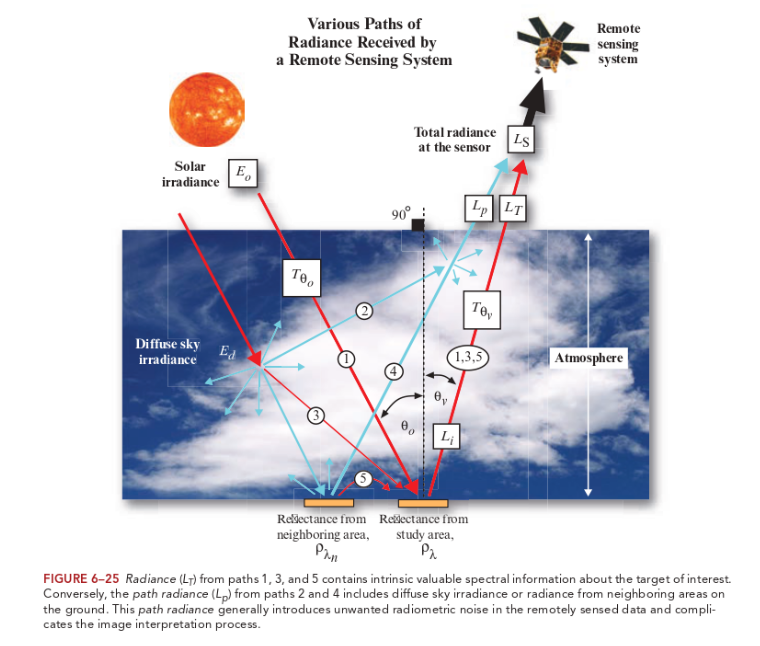
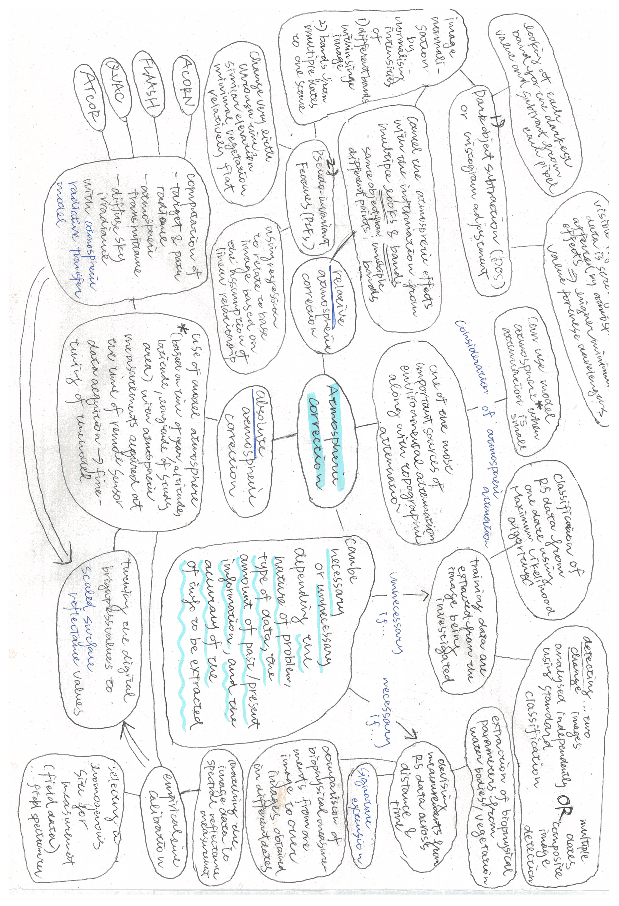
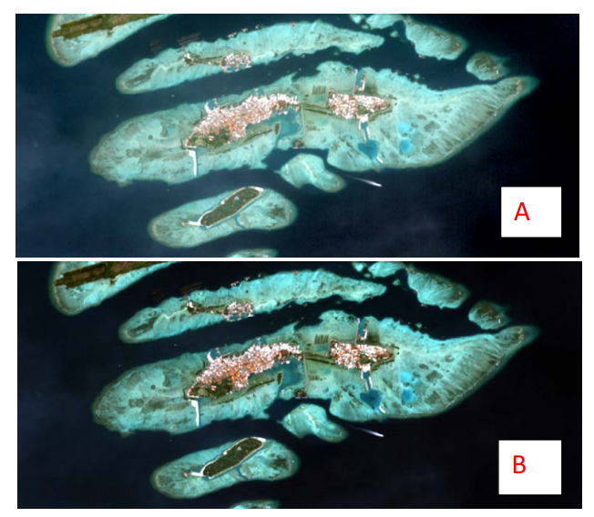
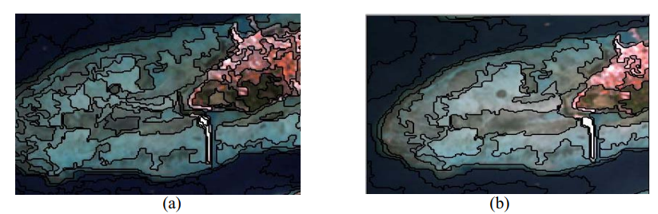
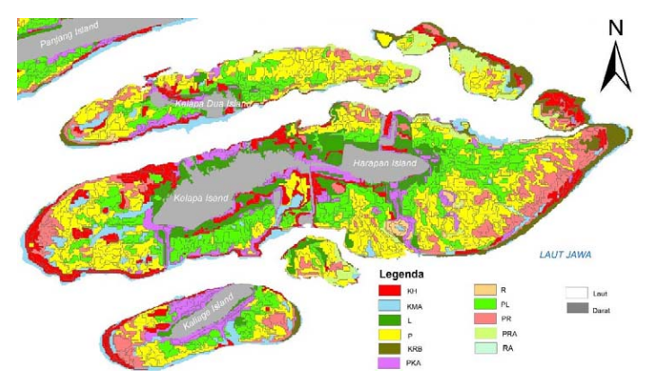
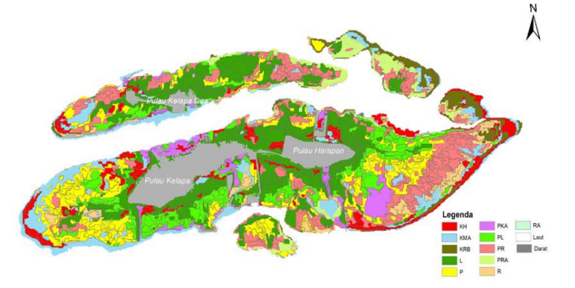
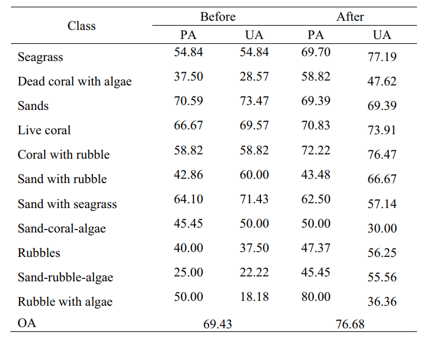

Week 3: Corrections
Summary
This week we went through the following content in the lecture and the practical:
Corrections – the pre-processing of the raw remotely sensed data
Geometric
Atmospheric
Orthorectification / Topographic
Radiometric
Data joining and enhancement
Feathering
Image enhancement
Here I will focus on atmospheric correction – it seems that this type of correction is the most common, as most of the results I saw with the Google search of “remote sensing corrections” seemed to deal with atmospheric correction.
Why do we need to conduct atmospheric correction? - The figure below demonstrates how atmospheric attenuation is caused

Below is a mind map of atmospheric correction, based on the lecture materials and the work by Jensen (1996). It puts together the importance of applying the atmospheric correction, and the different methods which can be employed based on the condition of the image and the capability.

Sample code
performing relative atmospheric correction in RStudio from the practical
- Dark Object Subtraction (DOS)
- preliminary step: download raw satellite data that comes in the Digital Number (DN) format
library(terra)
library(raster)
library(RStoolbox)
library(tidyverse)
library(fs)
library(rgdal)
## Import meta-data and bands based on MTL file
mtlFile <- ("prac_3/Lsatdata8/LC08_L1TP_175083_20211005_20211013_01_T1_MTL.txt")
metaData <- readMeta(mtlFile)
lsatMeta <- stackMeta(metaData)
# surface reflectance with DOS
l8_boa_ref <- radCor(lsatMeta, metaData, method = "dos")
#terra::writeRaster(l8_boa_ref, datatype="FLT4S", filename = "prac_3/Lsatdata8/l8_boa_ref.tif", format = "GTiff", overwrite=TRUE)
# Radiance
lsat_rad <- radCor(lsatMeta, metaData = metaData, method = "rad")
#terra::writeRaster(lsat_rad, datatype="FLT4S", filename = "prac_3/Lsatdata8/lsat_rad.tif", format = "GTiff", overwrite=TRUE)Application
For the application section, I would like to consider the question “how does conducting atmospheric correction and not perhaps influence the results of remote sensing analysis”. The research conducted by Siregar et al. (2018) may be useful as a case study to consider this. The study is focused on benthic habitat data in the Harapan and Kalapa Islands, Indonesia (survey area in the shallow water area), and aims to compare the object-image classification results with atmospherically corrected and uncorrected image. They have used FLAASH, which is one of the atmospheric radiative transfer models for absolute atmospheric correction. It allows to remove atmospheric attenuation by the acquisition of parameters such as reflectivity, emissivity, surface temperature and physical surface (ibid., p.2). It is equipped with an aerosol and mean value retrieval method based on dark pixel reflectance ratio (ibid., p.2).
The remote sensing data is a SPOT-7 multispectral image from 12 June 2016, consisting of 4 multispectral bands (Blue, Green, Red, NIR) with 6m spatial resolution. The reference data for classification is derived from a photo transect technique (April 2017) for 343 observation points (1m×1m), and the class of habitat is based on the benthic component cover in the images.

There are two stages to object-image based analysis. The first stage is segmentation, which involves combining neighbouring pixels until the heterogeneity threshold is hit. The image below demonstrates how the differences between the not-corrected and corrected image already arise at this stage. This may because the contrast of objects becomes more enhanced with atmospheric correction (ibid., p.7).

The second stage is classification, using a support vector machine algorithm. The classification scheme is based on the proportion of the 8 benthic components. The accuracy of the the classification is tested with overall accuracy (OA), producer accuracy (PA), user accuracy (UA) and the kappa value. It is possible to see that the overall accuracy of the object-based image classification improves with the atmospherically corrected image compared to the non-corrected image.



Reflection
One of the points I would like to reflect on here refers to the practical, especially regarding the library which is necessary to conduct the atmospheric correction. RStoolbox cannot be installed anymore with the normal procedure due to its removal from the CRAN repository on 2023-02-13. This made me realise the limitations of using RStudio for remote sensing analysis in a way that I didn’t expect. We did learn in the lecture that in many cases this type of correction has been pre-applied to the image for the usage some platforms. However, I think it is important that we know how these corrections are supposed to be applied for the appropriate usage of the data and how it might influence the results, as the study by Siregar et al. (2018) have shown. Furthermore, I will like to learn more about the suitability of different types of atmospheric correction in various contexts.